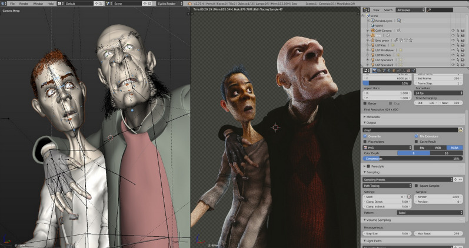
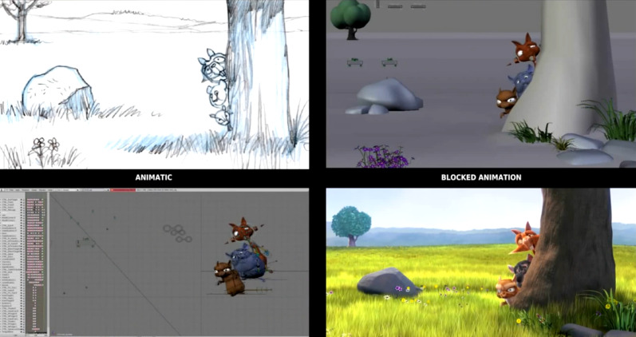
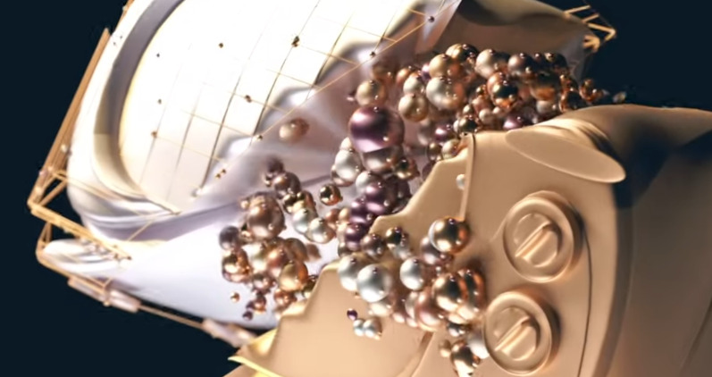
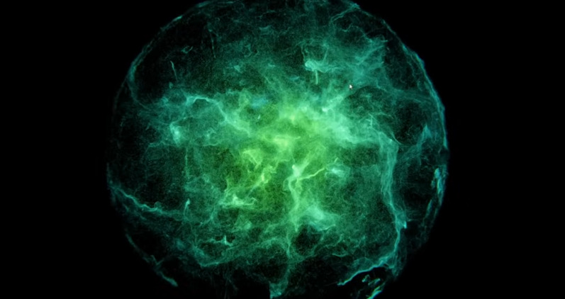

The short films
2005
Elephants dream produced during 2005-2006 by the Blender Foundation and the Netherlands Media Art Institute. The film tells the story of Emo and Proog, two people with different visions of the surreal world in which they live. Viewers are taken on a journey through that world, full of strange mechanical birds, stunning technological vistas and machinery that seems to have a life of its own. After the success of Elephants Dream, the Blender Institute was established in the summer of 2007.
2008
After the success of Elephants Dream, the Blender Institute was established in the summer of 2007. As well as helping to define the Blender Foundation’s goals, the Blender Institute comprised a permanent office and studio, and began to create a series of Open Movies in collaboration with leading artists. this includes the comedy Big Buck Bunny (2008)
2010
Sintel, a movie close to my heart as this was the time i started learning Blender, myself. and a huge leap in the direction we see today. initiated by the Blender Foundation as a means to further improve and validate the free/open source 3D creation suite Blender. With initial funding provided by 1000s of donations via the internet community, it again proved Blender be a viable development model for both open 3D technology and for independent animation film.
What Blender has become
Styling

Blender's evolution into a powerhouse 3D creation suite has unlocked incredible possibilities, including the ability to achieve stylized shading reminiscent of the Arcane series. Arcane-style shading combines intricate hand-painted textures with dynamic lighting, creating a blend of realism and artistry that pushes creative boundaries. Blender's advanced shader nodes and real-time rendering capabilities, enabled through Eevee and Cycles, make it easier for artists to achieve such nuanced visuals. Its open-source nature has been a game-changer, allowing a global community to contribute to its features and accessibility. This collaborative spirit empowers creators worldwide, fostering innovation and enabling projects like Arcane to inspire and redefine animation and storytelling.
Particle simulation
Blender’s evolution in particle simulation has been transformative, making it a vital tool for creating realistic and stylized effects alike. From simulating smoke and fire to intricate fluid dynamics, Blender's particle system has grown in precision and flexibility, enabling creators to achieve complex visual phenomena with ease. Improvements in Blender’s physics-based simulations have opened doors for hyper-realistic effects and seamless integration with the rest of its robust feature set. The ability to simulate particles as part of dynamic environments, combined with real-time rendering through Eevee and Cycles, has made Blender a top choice for both animations and visual effects. This progression underscores Blender's commitment to delivering cutting-edge tools for its open-source community, allowing anyone to explore and innovate in the realm of digital artistry.
Geometry nodes
At the forefront of Blender's advancements is the groundbreaking introduction of geometry nodes, a feature widely regarded as a breakthrough in procedural design. Geometry nodes allow artists to build complex structures, animations, and visual effects procedurally, revolutionizing how assets are created and manipulated. Unlike traditional workflows, geometry nodes enable users to create and modify elements through a node-based system, offering unparalleled flexibility and reusability. This capability has not only enhanced particle simulations but also opened up entirely new creative workflows, from parametric architecture to generative art. As one of Blender’s most powerful features, geometry nodes are reshaping how artists approach 3D design, empowering them to craft intricate and dynamic scenes with incredible efficiency and control. This innovation has positioned Blender as a leader in procedural workflows, rivaling even the most advanced proprietary tools.